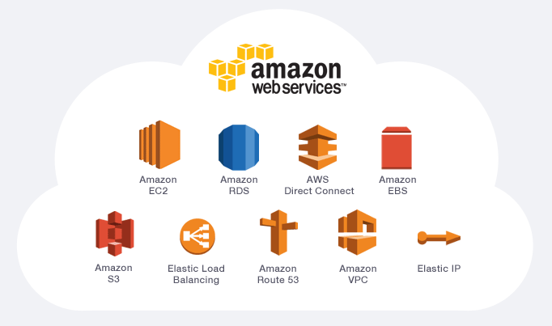

<!DOCTYPE html>
   <html lang="en"></html>
<html>
   <head>
     <meta charset="UTF-8">
     <meta http-equiv="X-UA-Compatible" content="IE=edge">
     <meta name="viewport" content="width=device-width, initial-scale=1.0">
      <link rel="stylesheet" href="styles.css">
      <title>My Focusing</title>
   </head>
   <body>

      <!-- Write your HTML in this file! -->
   <herader> 
      <h1>My Focusing on My Technical Career Path </h1>
      <h3>July 2022 By: Raniya Abdalla</h3>
      <nav>
         <li><a href="#frontend">Fronend Web Developer</a></li>
         <li><a href="#wordPress">WordPress Web Developer</a></li>
         <li><a href="#awsCloud">Aws Cloud Computing</a></li>
         <li> <a href="#cybersecurity">Cybersecurity</a></li>
         <li><a href="#fun">Somthing Fun about me</a></li>
      </nav>
   </herader>
   <main>
      <article>
         <section>
            <figure>
            <br>
         </figure>
            <a name="frontend"></a>
            <h2>Fronend Web Developer</h2>
   <p>A Front-End Developer works on the “client-side” of web development, meaning any portion of the site or app that users interact with. This can include a site’s layout, design, and the way users interact with it.<br><br>
         </section>

         <section>
            <figure>
             <br>
         </figure>
            <a name="wordPress"></a>
            <h2>WordPress Web Developer</h2>
   <p> A WordPress developer is a professional that specializes in the infrastructure and ecosystem of the WordPress platform. They might focus on improving the WordPress software itself or creating new products, particularly plugins and themes. They also might work with clients to help create, customize, and manage a WordPress site.<br><br>
         </section>

         <section>
            <figure>
             <br>
         </figure>
            <a name="awsCloud"></a>
            <h2>Aws Cloud Computing</h2>
   <p> Cloud computing is the on-demand delivery of IT resources over the Internet with pay-as-you-go pricing. Instead of buying, owning, and maintaining physical data centers and servers, you can access technology services, such as computing power, storage, and databases, on an as-needed basis from a cloud provider like Amazon Web Services (AWS).<br><br>
         </section>

         <section>
            <figure>
             <br>
         </figure>
            <a name="cybersecurity"></a>
            <h2>Cybersecurity</h2>
   <p> Cybersecurity is the art of protecting networks, devices, and data from unauthorized access or criminal use and the practice of ensuring confidentiality, integrity, and availability of information. It seems that everything relies on computers and the internet now—communication (e.g., email, smartphones, tablets), entertainment (e.g., interactive video games, social media, apps ), transportation (e.g., navigation systems), shopping (e.g., online shopping, credit cards), medicine (e.g., medical equipment, medical records), and the list goes on. How much of your daily life relies on technology? How much of your personal information is stored either on your own computer, smartphone, tablet or on someone else's system? <br><br>
         </section>

         <section>
            
            <a name="fun"></a>
            <h2>Somthing Fun about me</h2>
            <h4>I love to cooke a middle eastern dishs </h4>
            <h4>This is one of my favorite dishs</h4>
            
            <figure>
                <br>
            </figure>
            <h2>Hummus</h2>
   <p>Most everyone knows hummus. It’s the quintessential Middle Eastern dip made by blending chickpeas with tahini, garlic, and citrus.
   
      I grew up on it, and I'm convinced that this simple beige dip is some of the best stuff on earth! Creamy, satisfying and packed with plant-based protein.<br><br>
         </section>


      </article>
   </main>


   
   <footer>
      <h6>© Copyright 2022. All rights reserved to Raniya Abdalla.</h6>
   </footer>
   </body>
</html